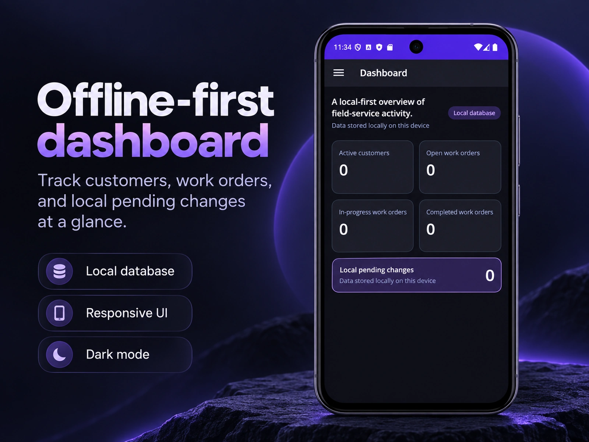
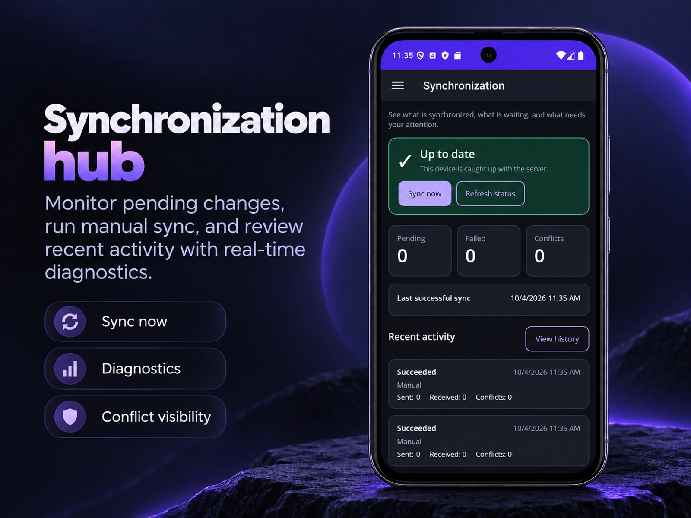
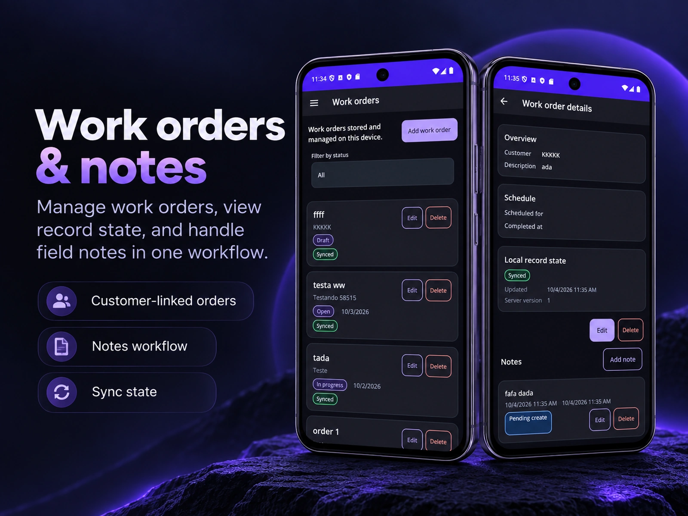
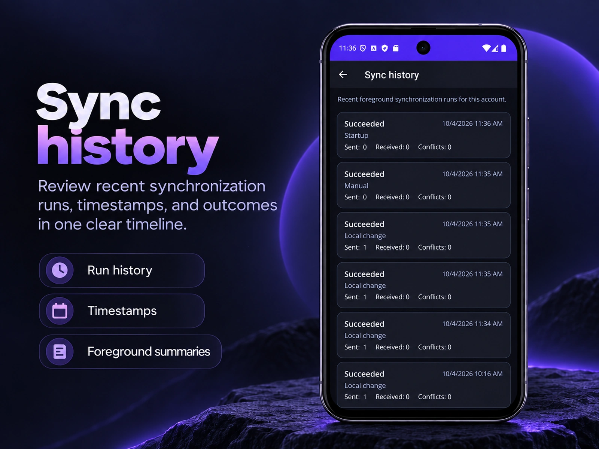
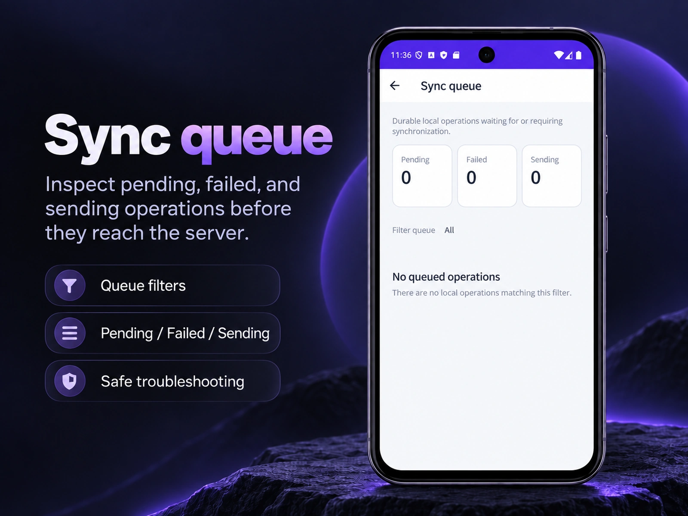

Local-first persistence
User-facing CRUD writes to SQLite first, so ordinary workflows remain useful without network access.
Full source code for local-first CRUD, a durable outbox, safe push/pull synchronization, conflict handling, authentication, diagnostics, and tests.

Create and change records without a connection, inspect the durable local queue, reconnect, synchronize, and verify the result in sync history.
Offline-first is not “add SQLite and sync later.” The kit focuses on the infrastructure that usually consumes the most engineering time — and keeps it visible enough to learn, debug, and extend.
User-facing CRUD writes to SQLite first, so ordinary workflows remain useful without network access.
Pending operations survive restarts, keep stable identities, and compact safely before dispatch.
Incremental sync with durable cursors, bootstrap support, idempotency, batching, and replay safety.
Optimistic concurrency, durable conflict records, and explicit Use Local / Use Server resolution paths.
JWT access tokens, rotating refresh tokens, SecureStorage, logout, and offline session restoration.
Status, queue, history, retry behavior, diagnostics, and clear failure states built into the reference app.
The source is separated into MAUI presentation, core abstractions, infrastructure, shared contracts, and an ASP.NET Core API. The demo domain stays intentionally small so the synchronization mechanics remain visible.
The included field-service sample exercises local CRUD, queueing, synchronization, diagnostics, work-order notes, and offline/reconnect behavior.




The goal is to save implementation time without hiding the decisions you will need to understand when the product becomes yours.
Version 1.0.0 was hardened as a source-code product and is explicit about its validated platform scope.
iOS and Mac Catalyst are source targets and were compile-checked in v1.0.0; they are not functionally certified.
The purchased version is licensed perpetually. Commercial apps, SaaS, internal systems, and client projects are permitted within the purchased seat count.
One-time purchase · Full source code · Unlimited projects · No royalties.
For one authorized developer.
For teams that need shared source access.
Secure checkout and digital delivery via Gumroad.
The purchased version is licensed perpetually, subject to the included license terms. Review the license terms, support scope, and refund policy before purchase.
No. The primary value is the offline-first infrastructure: SQLite persistence, durable outbox, synchronization, idempotency, conflicts, authentication, diagnostics, and tests. The UI is a reference implementation.
Yes. The commercial license permits client projects and private source delivery as part of an End Product. It does not grant the client general rights to reuse the Starter Kit as a base for unrelated projects.
Yes. Commercial apps, SaaS, internal systems, mobile, desktop, web/backend integrations, and client work are permitted under the purchased license.
No. There is no revenue share, per-user, per-install, or per-project runtime fee within the rights of the purchased license.
Guaranteed background synchronization, attachments/media synchronization, push notifications, realtime sync, and functional Apple-platform certification are not included in version 1.0.0.
Windows and Android were functionally validated for the 1.0.0 release. iOS and Mac Catalyst remain source targets and were compile-checked, but are not functionally certified in v1.
The purchased version has a 12-month Technical Validity Period from the Purchase Date with reasonable technical assistance as described in the Commercial License. It does not include a 24/7 SLA, lifetime support, or custom development.
Start with the included documentation and troubleshooting guide. If an issue remains, the support page shows exactly what diagnostic information to provide so problems can be reproduced faster.
Use a production-oriented reference implementation for the infrastructure that usually takes the longest to design, test, and debug.